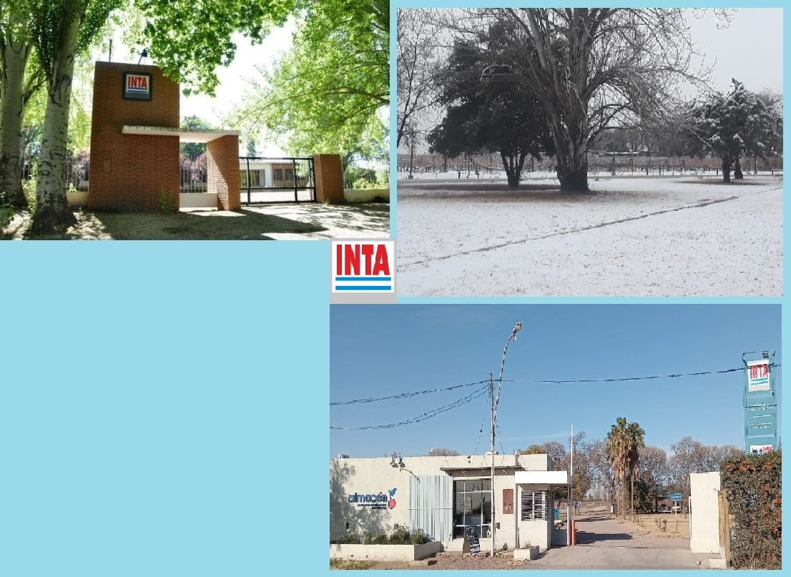

Mi ubicación


¿Cómo funciona cada herramienta de esta barra?
Te ayudará a encontrar un lugar o una personao una parcela en caso que seas parte del personal de la unidad
Te ayudará a encontrar una Agencia de Extensiónu otra Experimental de Mendoza/San Juan
Te ofrecerá algunas herramientas adicionalestales como medidor de distancia y GPS
Te dará detalles sobre cómo usar cada herramienta
Te posibilitará enviar un mail de consulta/sugerencia
Acceso para usuarios registrados
Las herramientas disponibles son...
Volver a mostrar mensajes informativos. (Restablecer los mensajes informativos que puedas haber cancelado).
 Desactivar mi ubicación actual
Desactivar mi ubicación actual
Centrar en mi ubicación actual
 Medir distancias ó perímetros y superficie
Medir distancias ó perímetros y superficie
Mapa de fondo:
¿Sos visitante y querés ubicar algo o alguien?En esta sección podrás buscar por nombre de edificio, servicio, especialidad o persona.Si activás tu GPS, podrás llegar mejor al lugar que buscás.
En caso que seas parte del personal de la unidad y hayás logueado, también podrás acceder a la información de las parcelas bajo ensayo.
¿Querés saber dónde está y cómo llegar a una Agencia de Extensión o Experimental de Mendoza ó San Juan?En esta sección podrás buscarlas por nombre.Si activás tu GPS, podrás obtener una o dos rutas sugeridas para llegar.
En esta sección hallarás herramientas últiles, tales como activar tu ubicación en tiempo real y medir una distancia o el perímetro y la superficie de una zona que vos indiqués.
Ponete en contacto con el desarrollador para hacerle saber de un error o una sugerencia de mejora.
¿Sos parte del personal de la unidad?
Logueate y accedé a la información de cada parcela bajo ensayo.
¿Encontraste algún problema, tenés alguna sugerencia para mejorar este sitio o querés solicitar acceso como usuario registrado?
Por favor, comunicate con su desarrollador haciendo click aquí...-

Si sos un visitante, este mapa en línea te permitirá:
* Ubicar una persona, servicio, especialidad o lugar
* Encontrar alguna otra unidad del INTA en la zona con una o dos rutas recomendadas
(Estas dos herramientas con la opción de hacerlo a partir de tu ubicación en tiempo real)
* Acceder a algunas herramientas geográficas como medir distancias, perímetros y superficies, etc.
Si trabajás en INTA, además podrás:
* Realizar consultas sobre las parcelas y las construcciones de la Experimental Mendoza.
En la barra lateral podrás encontrar secciones con las herramientas disponibles y un apartado de ayuda para encontrarlas y saber su función.-